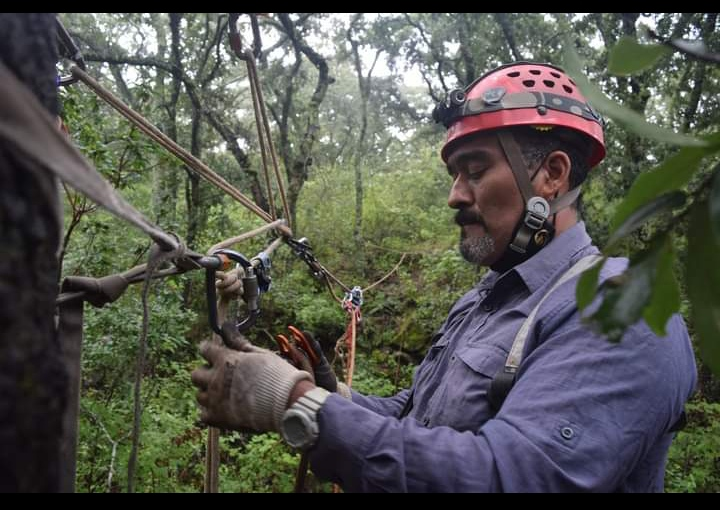

Es un proyecto que surgio en la Sierra de Alvarez, ubicada en el estado de San Luis Potosi entre los municipios de: Municipios: Armadillo de los Infante, Zaragoza, San Nicolas Tolentino y la cual alberga flora como lo son distintos tipos de encino al igual que una extensa diversidad de fauna como puede ser:Venado cola blanca (Odocoileus virginianus ), Pecari de collar (Pecari tajacu), Lince (Lynx rufus), Cacomixtle (Bassariscus astutus), Murciélago trompudo (Choeronycteris mexicana) por mencionar algunos.
Un poblador del lugar comento con un grupo de espeleologos que acudian a explorar el lugar sobre un "hoyo" enorme ubicado en un terreno particular que el cuidaba. Estos espeleologos, interesados, acudieron al lugar nombrandolo "La cueva de los Pitacoches" en la cual se llevaron una gran sorpresa al ingresar a la enorme cavidad en forma de embudo de aproximadamente 75 metros de profundidad.

Sus lamparas reflejaban algo en el interior. Sin embargo al llegar al fondo se encontraron con una desagradable montaña interminable de basura. Pusieron manos a la obra y solicitaron voluntarios, los cuales lejos de quejarse por sacrificar sus fines de semana en familia, se propusieron sacar las mas de 3 toneladas de basura del fondo, empleando un sistema de tirolesa y extraccion.